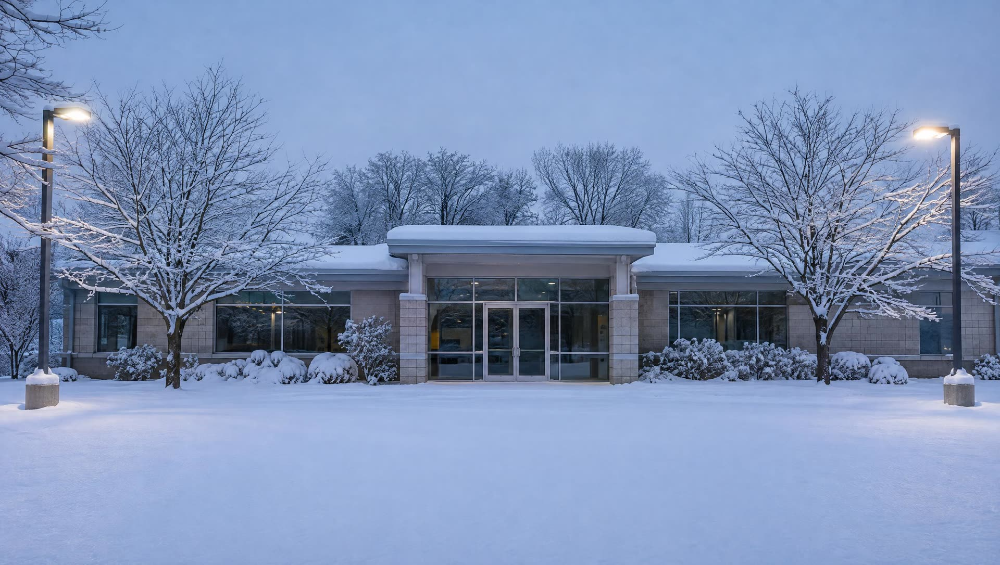
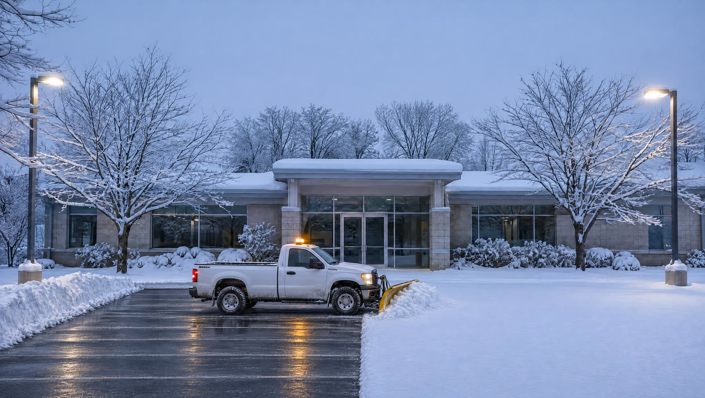
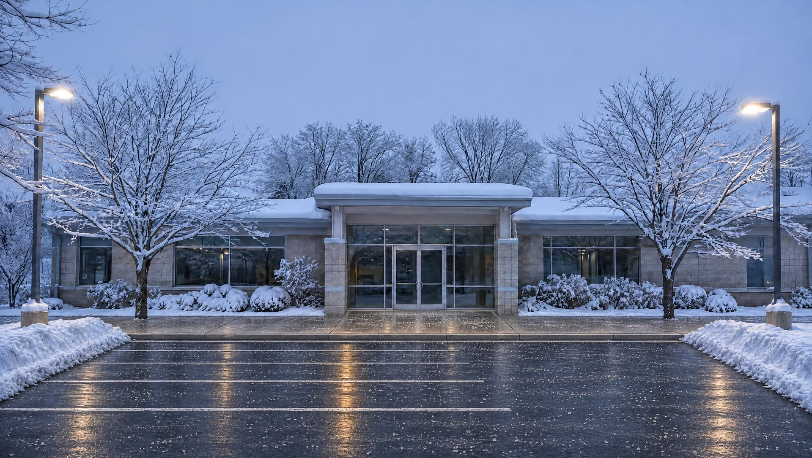
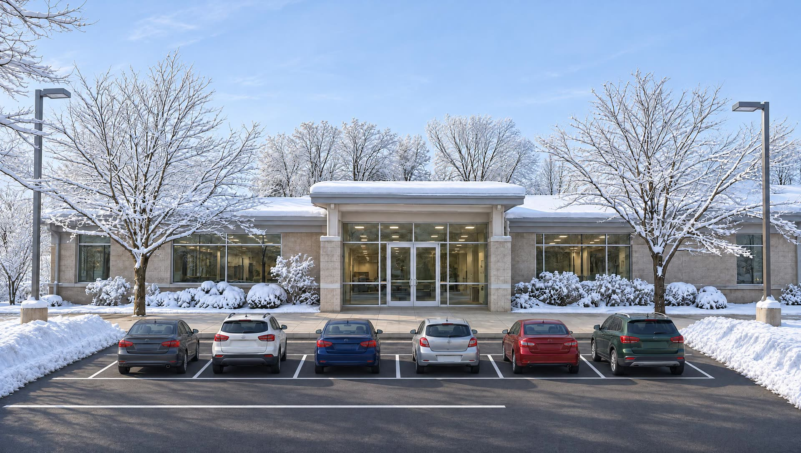

A storm overnight. Doors open at eight.
During winter storm events our people are on call 24 hours a day.
Plows out before the lot fills up.
Trained drivers and the right equipment clear lanes and spaces fast.
Salt down, walks cleared.
Straight road salt on parking areas, so there is no sand to clean up in spring. Safe ice melters on sidewalks and landings, to protect concrete and pavers.
Open for business.
A safe lot and safe walks, with safety as the first priority from the first pass to the last.
Commercial snow and ice management
Snow and ice
For businesses only: we do not offer residential snow removal. When a winter storm is on the way, our crews and a fleet of winter-ready trucks are on call around the clock to keep your property safe and open.
Request an estimateWhat is included
- Commercial snow and ice management
- Plowing
- Salt application
- Sidewalk and landing clearing
- Hauling
See the difference
Drag the green line.
The same spot, from the same place. Pull the line left and right to compare.
Good to know
- On call 24 hours
- Throughout winter storm events.
- Winter-ready fleet
- Prepared for snow, ice and whatever else winter brings.
- The right product in the right place
- Road salt for lots and roadways. Safe ice melters where concrete and pavers need protecting.
- Commercial properties only
- We do not offer residential snow removal.
Next service
Hardscape →